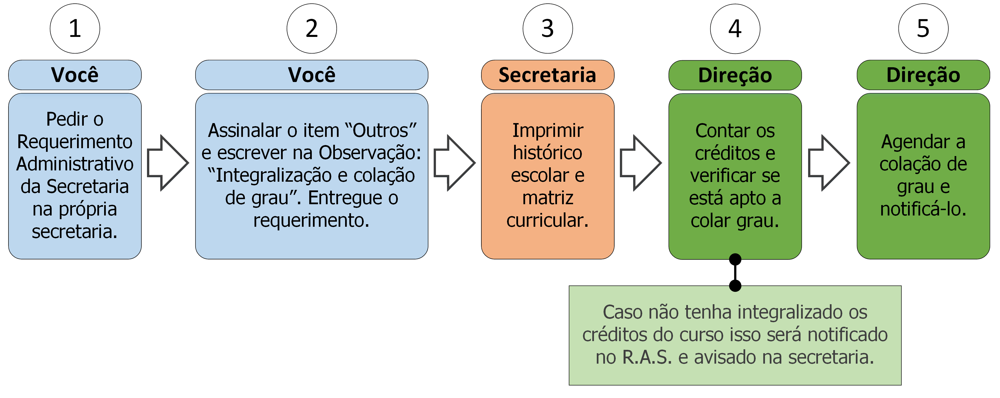

15.2 Integralização e colação de grau

15.2.1 Descrição
Para finalizar o curso há a necessidade de integralizar os créditos e colar grau. Para isso deve seguir os seguintes passos:
- A. Peça o Requerimento Administrativo da Secretaria;
- B. Assinale o item “Outros” e preencha no campo Observação: “Integralização e colação de grau”;
- C. Entregue o requerimento;
- D. A secretaria imprimirá seu histórico escolar e matriz curricular;
- E. A direção contabilizará seus créditos concluídos e não concluídos e os assinalará na matriz curricular, marcando-a, caso não tenha integralizado os créditos do curso o processo será encerrado;
- F. A direção agendará a colação de grau e notificará o requerente (ver regra 1 e 2 na seção 15.2.3).
15.2.2 Documentos necessários
Nenhum.
15.2.3 Regras
- 1. Prazo de efetivação: A Secretaria e a direção têm até 5 dias úteis para efetivar a integralização.
- 2. Notificação da data de colação de grau: O requerente deve ser notificado da data (esta ação depende de outros envolvidos no processo).